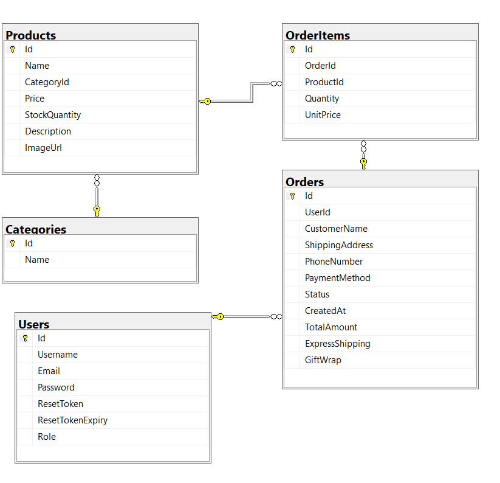

-Hiển thị sản phẩm kèm hình ảnh
-Có mô tả chi tiết
-Lọc sản phẩm theo tên
-Thêm giỏ hàng
-Phân loại sản phẩm
-Thanh toán
-Lịch sử đơn hàng
-Thống kê doanh thu theo ngày
-Sản phẩm bán chạy
-Quản lý người dùng
-Quản lý đơn hàng
-Thanh toán QR
-UI chưa đẹp mắt, tối ưu, gọn gàng
-Giao diện thông tin khách hàng
-Thống kê doanh thu chi tiết các ngày
-Thống kê theo quý - năm
-Dịch vụ chăm sóc khách hàng
-Hủy hàng bên khách hàng
-Gợi ý các sản phẩm có liên quan trong tìm kiếm
-Thanh toán QR thực
Lý do:Cho phép người dùng lọc sản phẩm theo hãng (Ví dụ: Chỉ xem Laptop Dell).
Gồm: Id, ProductId (FK), ImageUrl, IsPrimary.
Lý do:Hiện tại bảng Products của bạn chỉ có 1 cột ImageUrl. Thực tế mỗi chiếc điện thoại hay laptop cần một bộ sưu tập (gallery) gồm nhiều góc chụp khác nhau.
Gồm: Id, ProductId (FK), Color, Storage (ROM), RAM, AdditionalPrice, StockQuantity.
Lý do:Một chiếc iPhone 15 sẽ có bản 128GB, 256GB và các màu khác nhau. Giá tiền và số lượng tồn kho của từng bản cũng khác nhau. Bảng này sẽ giải quyết triệt để vấn đề đó.
Gồm: Id, ProductId (FK), UserId (FK), Rating (1-5 sao), Comment, CreatedAt.
Lý do:Tăng độ tin cậy cho cửa hàng. Giảng viên rất thích các chức năng có tính tương tác này.
Gồm: Id,Code, DiscountPercent (hoặc DiscountAmount), ExpiryDate, UsageLimit.
Lý do:Dùng để áp dụng mã giảm giá lúc Checkout, giúp luồng thanh toán phức tạp và thực tế hơn.
Tuần 1: Cải thiện Giao diện & Chuẩn bị nền tảng dữ liệu
Tuần 2: Quản lý Hồ sơ & Trải nghiệm Hủy đơn
Tuần 3: Tối ưu Tìm kiếm & Gợi ý & Thanh toán trực tuyến thực tế
Tuần 4: Tính năng Voucher
Tuần 5: Nâng cấp chức năng cho Quản trị viên (Admin)
Tuần 6: Dịch vụ Chăm sóc Khách hàng
Tuần 7: Kiểm thử (Testing) & Hoàn thiện Báo cáo